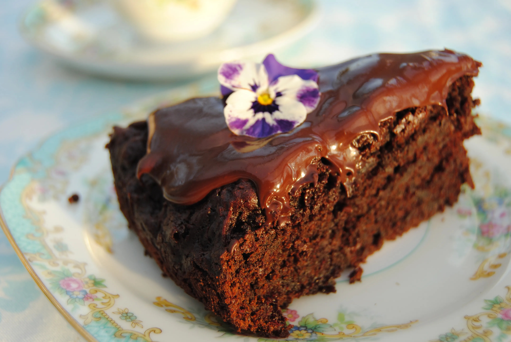

Home
Chocolate Beetroot Cake

Description
A cake my mother made when I was a kid, I dont remember a lot from back then - but I remember this cake. That being said I cannot remember where the recipe was from, so until I can ask my mother if she remembers, I will be using this recipe from 'Just A Mum NZ'
Rich and moist cake, never dry, and the beetroot makes the chocolate have more depth.
Prep Time: 20 Minutes Cook Time: 1 Hour 50 Minutes
Ingredients
- 2 Cups White Sugar
- 1 1/2 Cups Vegetable Oil
- 4 Eggs
- 2 tsp Vanilla Extract
- 2 Cups Plain White Flour
- 1 tsp Baking Soda
- 1 tsp Salt
- 1/2 Cup Cocoa Powder
- 3/4 Cup Dark Chocolate Chips
- 2 Cups Cooked Beetroot
Instructions
- Preheat the oven to 180ºC on Bake
- Grease the bottom and sides 23cm spring-form cake tin and line base with paper.
- Mash, grate or blitz the beetroot and set aside.
- In a large bowl or food mixer add the sugar, oil and vanilla essence and whisk together well.
- Add the eggs one at a time and whisk well between each addition.
- In another large bowl add the flour, baking soda, baking powder, salt and cocoa powder and stir to combine.
- Add the dry ingredients to the first bowl and combine well.
- Add the Chocolate Chips, and beetroot and stir until just combined
- Pour into the prepared tin and bake for 1 hour 10 minutes, or until a skewer inserted into the centre of the cake comes out clean. It may take up to 1.5 hours, so do check consistently, the cake may appear cooked but check with a knife or skewer to make sure.
- Remove from the oven and allow to cool in the tin before icing.
- Use a basic vanilla icing, ganache or a chocolate buttercream to serve.
- This cake gets better as they days go by and will freeze well.